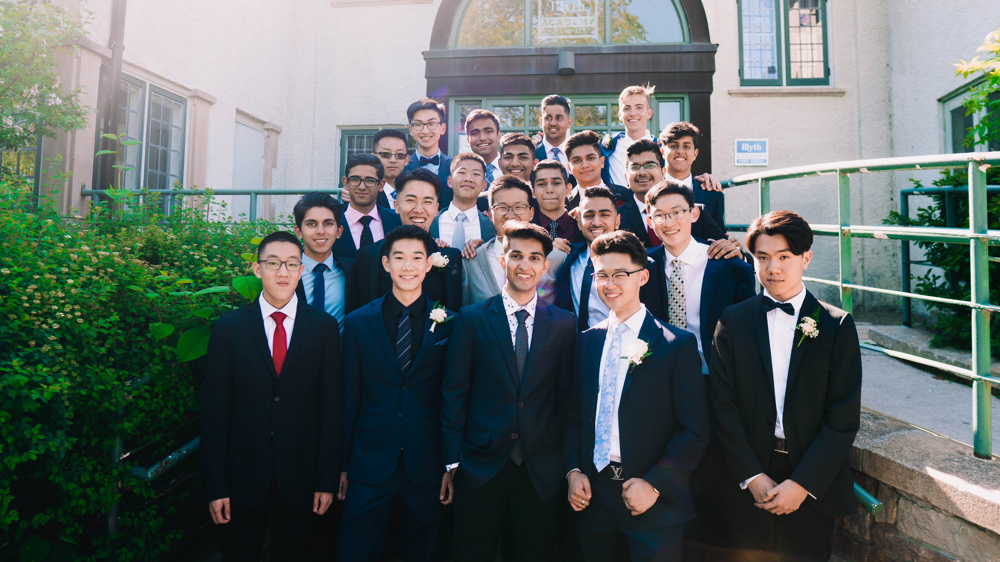
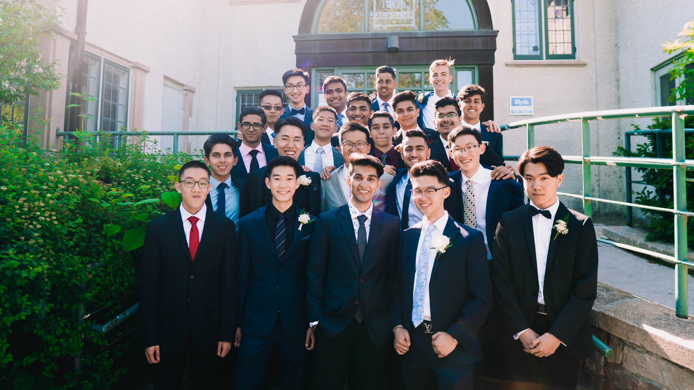

Get A Little More Technical
CV
 

"Learn from yesterday, live for today, look to tomorrow, rest this afternoon."
- Charles Schulz
Hi, Erick here, and on my left is 14 year old me. Fresh off of quitting piano lessons, I was entering my first year in high school, living out my youth to its fullest with no concern for the future at all. 5 years later, I ended up as a Chemical Engineering student at the University of Waterloo with hobbies and interests that extend past my program. My drive to expand my experiences and develop new skills has never been more profound than now, as I continue to search for my true career aspiration. I hope this website will help you get to know me a little better as a person.
Although I received Honours for the RCM Advanced Rudiments Theory Exam, Grade 8 Piano Exam and various Piano Competitions, playing piano has always felt empty. After quitting in 2014, I shortly regained my passion after watching a few YouTube videos. Artists such as Ludovico Einaudi, Giovanni Allevi and Yiruma introduced entirely new genres of music to me. In recent years, I have discovered new meaning within the classical pieces I onced loathed through Chopin and Schubert. Having quit for 5 years, I have continued my piano education and training on my own, hoping to return one day to finish where I left off.
After going through the "I'm going to make the NBA" phase in 8th grade, I fell in love with the sport in a different manner. While training improved my technical skillsets, I was also focused on building leadership and an assertive mindset. I was especially inspired by Oklahoma City Thunder's Point Guard, Chris Paul, who has molded the way I approach the game, how I help my teammates, and much more. Playing 4 years of rep basketball provincially provided me invaluable experience as a team captain and playmaker, helping my team as a whole improve and make it to the next level.
It's surprising how much a camera can expand your travelling experiences. While I may not be the most proficient photographer, I treat it more as a hobby. Whenever we go on vacations to places like Switzerland, or even biking locally at Toronto's Lakeshore, my camera has been able to capture vivid memories that my family, friends and I will cherish for years to come.
This past summer, my programming journey was jumpstarted at the Hack the 6ix competition. My team and I built Citizen A, a web application that allows car accident witnesses to submit a witness statement report upon a collision. We were inspired by the slow and obscure process for submitting these statements, and wanted to create a more accessible method for witnesses through our smooth and intuitive UI. Our project was recognized by companies such as Microsoft and Intact Insurance as a viable product towards insurance-related predicaments.
As my very first C++ project, I created my first game on Visual Studios Code. The game generates one number that represents the sum and one number that represents the product of a specific number of unknown numbers. The challenge is for the user to guess what the numbers are that will create the generated product and sum values. I was able to effectively learn and utilize various functions and object-oriented programming principles to create a challenging game that increases in difficulty as the user completes each problem.
My passion towards basketball and the NBA was extended through data analytics once I discovered Python Pandas. By using NBA statistic databases to collect player data, I created a correlational analysis on how one player affects another in terms of points, assists, efficiency and more. This allowed me to make precise conclusions on a player's true value to their teammates, which reflects the recruitment processes within the NBA.
After receiving a Udemy Certification for completing the MOS Excel Expert Course, I decided to create my own online training module to help prepare myself for the MOS Excel Expert Exam. Most of the application was built on JavaScript classes and embedded Excel Sheets. The process of creating the practice problems helped accelerate my ability to grasp and better understand advanced Excel concepts, especially in real-world settings. The module provides random Excel problems from various categories of the actual exam.
I love business. Creating networks, selling ideas, and entrepreneurship has always held a great deal in what I aspire to do. Like any start-up, I've experienced great losses in opportunities during my time as a Hospitality and Tourism contestant in the DECA competition. While barely passing the threshold score to enter Provincials, I was able to come back stronger and take the Top Ten award to qualify for the International DECA Competition. Although holding that award on stage was unreal, the resilience, experience in negotitiation and critical thinking I amassed during the long hours of practice with my partner was the bigger win for me.
The International Society for Pharmaceutical Engineering was the first group I decided to take part in because of my interest in pharmaceuticals and biotech. I took initiative in starting Canada's first Student Chapter at the University of Waterloo. As the Student Chapter president and ISPE Young Professional member, I am tasked with managing the executive team in creating industry-relevant experiences for all engineerings students at the school. The network of industry professianls I've built has expanded my understanding of the industry.
Although my expectations going into the job wasn't high as a first year coop student, the Region of Peel ended up facilitating one of the most well-rounded engineering experiences I've ever had. As a PM intern, I jumped into numerous ongoing building renovation, equipment assessment, policy implementation projects. During these projects, I was often immersed in AutoCAD P&ID drawing analysis and measurements. Building condition assessments provided me with a broader understanding of various types of equipments such as exhaust fans or conduit line systems and how to test their functionality. Large amounts of collected data from these assessments allowed me to utilize advanced Excel functions and Pivot Tables to help summarize the information. I was also fortunate to have been able to initiate a window AC policy change project for all Peel residential buildings, exposing me to types of AC systems, contract/policy writing, and government procedures on projects like these. In the end, the team atmosphere I was surrounded with during meetings and lunches allowed me to create lasting bonds I hope to reignite one day.
"Dear SHADs, Damn, it actually happened...You guys were everything I could have asked for and so much more. What started off as 52 strangers and no WIFI ended with 52 new companions and, well, still no WIFI." - Erick Yan (Instagram). If there's anything I learned during my time as a SHAD alumni, it was that there is always more to learn. Although I was engaged in a month-long business project to sell a flood protection device, a task to build eco-friendly robots, and plenty of early morning lectures on topics ranging from pharmacogenomics to marathon preparation, the connections I made along the way proved to be the most valuable. The conversations we had on our way to the top of Mount Girabaldi, the piano playing sessions during the evening, the stories we shared with one another made this the most unexpected eye-opening experiences I've ever had in my life.